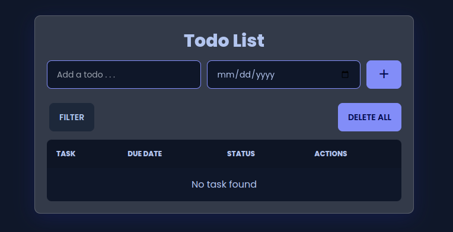
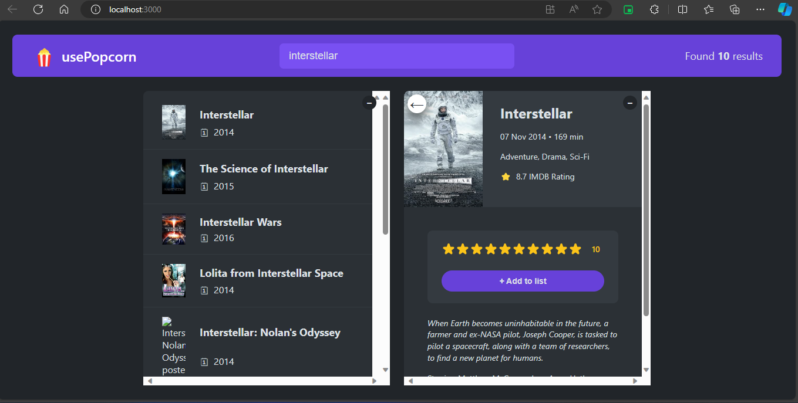

Projects
-
YelpCamp
YelpCamp is a campground rating app, where users can create their own campgrounds,view and comment on others' campgrounds.

-
To Do App
To Do App provides a simple and intuitive user interface for managing tasks and to-do lists.
 -
UsePopcorn
UsePopcorn it's an intuitive and user-friendly platform that helps users find and rate their favorite movies and series. The app offers many features that make it easy to find content and manage your personal lists.
